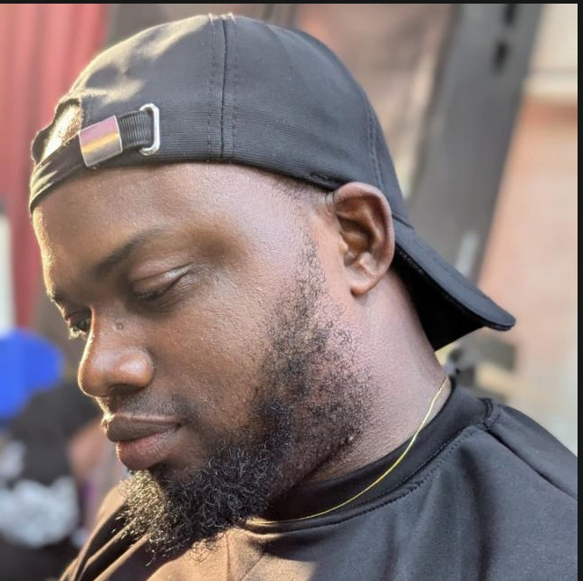

From Colleagues to Forever ❤️
Sometimes, the most beautiful stories begin in the most ordinary places. Ours began at DP World Logistics, our place of work. I remember the first time I saw her. There was something about her that I could not quite explain, but deep down something told me, “This is the woman who will be my wife.” I didn't just want her to be my girlfriend. From the beginning, my heart was looking beyond that. I wanted a future with her. I wanted a woman I could build a home with, grow with, pray with, laugh with, and eventually call my wife. So, slowly and intentionally, I began to ask her out not simply to be my girlfriend, but to be the woman I would spend my life with.
But she did not make it easy for me. 😂
She gave me quite a tough time. There were moments when I almost lost hope. I wondered if perhaps I had been imagining a future that she couldn't see. There were times I felt like giving up, but something in me kept saying, “Don't give up.” Then came one night, we had an honest conversation, one of those conversations where everything is finally said without pretending, without hiding feelings, and without holding anything back. I told her how much she was making me go through, how deeply I cared about her, and how much I wanted us to work.
That conversation changed everything. Somehow, that night became a turning point in our story. She began to see what I had been seeing all along.
And from there, we started writing a new chapter, we kicked off on a good note, and what started as two colleagues at work gradually became something much bigger. Two people who met by chance became two people who chose each other. We have had our moments. We have laughed, disagreed, grown, learned, and loved. But through it all, one thing has remained clear: we are meant to walk this journey together. Today, I look at the woman I once saw across the workplace, and I can't help but smile. The woman I knew I wanted, the woman who almost made me lose hope, the woman who eventually saw a future with me, the woman who became my love, my best friend, my partner, and now, my wife.
What began at workplace has brought us to this beautiful moment and today, we are not just celebrating how we met, we are celebrating how far we have come, the choice we made to love each other and the future we are about to build together. Our story may have started at work, but this is only the beginning of our greatest assignment yet: building a lifetime together. My love, I would choose you again, through every difficult conversation, every uncertain moment, every laugh, every tear, every challenge, and every beautiful day ahead, I choose you.
And if I had the chance to live this story all over again, I would still walk into DP World Logistics, see you for the first time, and somehow, my heart would still whisper the same thing: “That's my wife.” Today, you are no longer the woman I was hoping would say yes, you are the woman who said yes, you are my wife. and from this day forward, it is no longer your story or my story, it is OUR STORY. Forever begins with us. I love you, my wife, and I will keep choosing you, today, tomorrow, and for the rest of my life. Forever, my love. ❤️